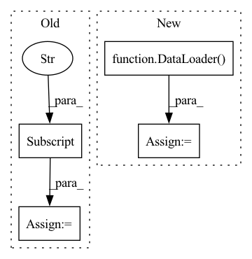

Pattern ID :28520

Before Change
self.img_size = img_size
self.min_size = min_size
self.lrflip = augmentation["LRFLIP"]
self.jitter = augmentation["JITTER"]
self.random_placing = augmentation["RANDOM_PLACING"]
self.hue = augmentation["HUE"]
self.saturation = augmentation["SATURATION"]
self.exposure = augmentation["EXPOSURE"]
After Change
self.coco = COCO()
self.val_dataset = data.Build_VAL_Dataset(cfg)
self.val_loader = DataLoader(val_dataset, batch_size=cfg.VAL.BATCH_SIZE, shuffle=True, num_workers=8,
pin_memory=True, drop_last=True, collate_fn=val_collate)
self.coco = convert_to_coco_api(data_loader.dataset, bbox_fmt="coco")
self.coco.createIndex()
self.ids = self.coco.getImgIds()
In pattern: SUPERPATTERN
Frequency: 4
Non-data size: 4
Instances
Fragment ID: 84388357
Project Name: jingtianyilong/yolov4-pytorch
Commit Name: 1213173c1b2bcf52d92e767794ff51cb49dc73bf
Time: 2020-10-09
Author: zijie.guo@daimler.com
File Name: utils/cocodataset.py
M Class Name: COCODataset
N Class Name: COCODataset
M Method Name: __init__(3)
N Method Name: __init__(9)
M Parent Class: Dataset
N Parent Class: Dataset
M File Name: utils/cocodataset.py
N File Name: utils/cocodataset.py
M Start Line: 16
M End Line: 49
N Start Line: 17
N End Line: 56
'>
Before Change
if progress_bar != None:
progress_bar.progress(float(item+1)/len(dataset.image_ids))
file_name = dataset.imgs[dataset.image_ids[item]]["file_name"]
sample = dataset.__getitem__(item)
keypoints3D = sample[1]
imgs_orig = sample[0]
After Change
pointsNet = []
pointsGT = []
filenames = []
data_generator = DataLoader(
dataset,
batch_size = 1,
shuffle = False,
num_workers = cfg.DATALOADER_NUM_WORKERS,
pin_memory = True)
for item, sample in enumerate(tqdm(data_generator)):
if progress_bar != None:
'>
Fragment ID: 84388351
Project Name: jarvis-mocap/jarvis-hybridnet
Commit Name: 327b43a36cc8aa4995c6e50842b02f3577a1e241
Time: 2022-04-28
Author: jarvismocap@gmail.com
File Name: jarvis/analysis/analyze.py
M Class Name: AnonimousClass
N Class Name: AnonimousClass
M Method Name: analyze_validation_data(5)
N Method Name: analyze_validation_data(5)
M Parent Class:
N Parent Class:
M File Name: jarvis/analysis/analyze.py
N File Name: jarvis/analysis/analyze.py
M Start Line: 28
M End Line: 52
N Start Line: 22
N End Line: 82
'>
Before Change
self.logdir = task_logdir / "domains" / f"supervised_dataloader_{self.uid}"
self.logdir.mkdir(parents=True, exist_ok=True)
self.base_dataset = kwargs["dataset"]
self.dataloaders = self.pick_dataloader(self.config)
def __str__(self):
After Change
self.dataloaders = {}
for purpose in ["train", "val", "test"]:
dataset = OfflineHdf5Dataset(hdf5_dataset_path=pathlib.Path(self.config["dataset_path"]), purpose=purpose)
self.dataloaders[purpose] = DataLoader(dataset=dataset,
batch_size=self.config["batch_size"],
shuffle=self.config["shuffle"],
num_workers=self.config["num_workers"])
def __str__(self):
return str(self.config)
'>
Fragment ID: 84388365
Project Name: mstoelzle/solving-occlusion
Commit Name: a2670446fbd793b4fc7433dc59771326bb74e669
Time: 2020-09-03
Author: maximilian@stoelzle.ch
File Name: src/dataloaders/supervised_dataloader.py
M Class Name: SupervisedDataloader
N Class Name: SupervisedDataloader
M Method Name: __init__(1)
N Method Name: __init__(4)
M Parent Class: BaseDataloader
N Parent Class: BaseDataloader
M File Name: src/dataloaders/supervised_dataloader.py
N File Name: src/dataloaders/supervised_dataloader.py
M Start Line: 20
M End Line: 33
N Start Line: 14
N End Line: 26
'>
Before Change
for _ in range(self.d_sample_training_epochs):
for corpus, fake_data in zip(train_data, fake_dataloader):
// interaction = interaction.to(self.device)
real_data = corpus["target_idx"]
min_batch = min(real_data.shape[0], fake_data.shape[0])
losses = self.model.calculate_d_train_loss(real_data[ : min_batch], fake_data[ : min_batch], epoch_idx=epoch_idx)
total_loss = self._optimize_step(losses, total_loss, self.model.discriminator, self.d_optimizer)
After Change
real_data = self._get_real_data(train_data)
real_dataloader = DataLoader(real_data, batch_size=self.model.batch_size, shuffle=True, drop_last=True)
fake_data = self.model.sample(self.d_sample_num)
fake_dataloader = DataLoader(fake_data, batch_size=self.model.batch_size, shuffle=True, drop_last=True)
for _ in range(self.d_sample_training_epochs):
for real_data, fake_data in zip(real_dataloader, fake_dataloader):
losses = self.model.calculate_d_train_loss(real_data, fake_data, epoch_idx=epoch_idx)
'>
Fragment ID: 84388331
Project Name: rucaibox/textbox
Commit Name: d2eba1b6e5e8b3a117c7ee4254a228832a52d500
Time: 2020-11-18
Author: 1020139164@qq.com
File Name: textbox/trainer/trainer.py
M Class Name: GANTrainer
N Class Name: GANTrainer
M Method Name: _d_train_epoch(3)
N Method Name: _d_train_epoch(3)
M Parent Class: Trainer
N Parent Class: Trainer
M File Name: textbox/trainer/trainer.py
N File Name: textbox/trainer/trainer.py
M Start Line: 474
M End Line: 485
N Start Line: 481
N End Line: 491